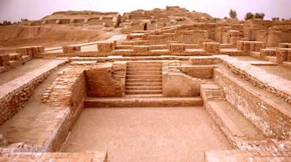
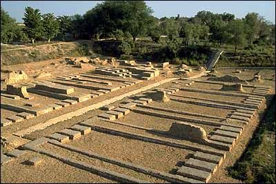
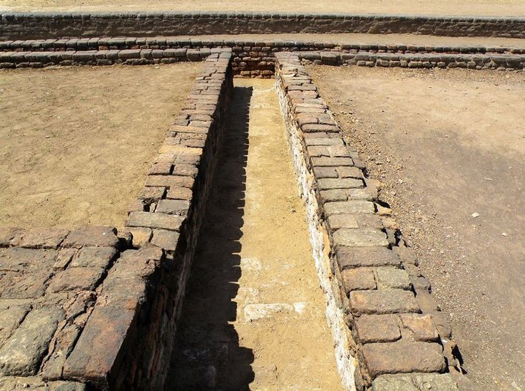
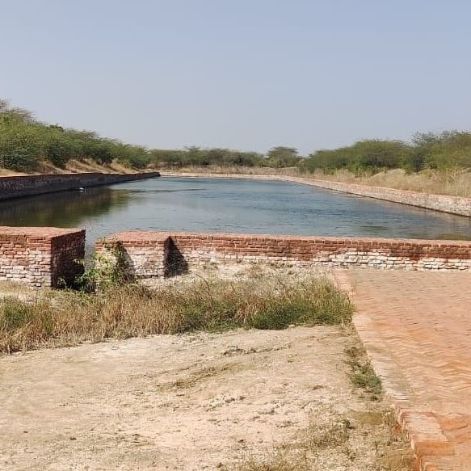
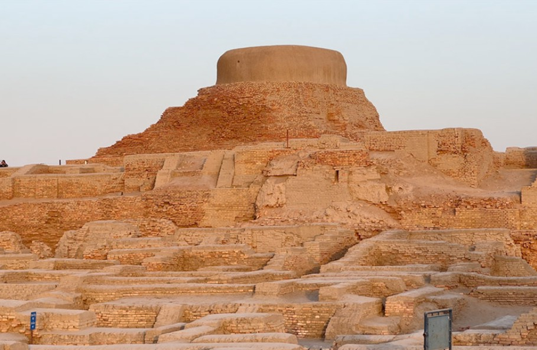
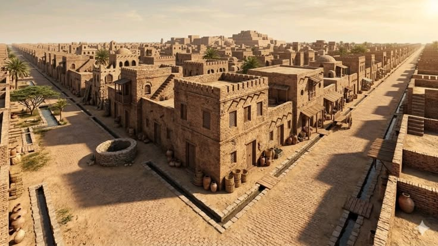

Urban Engineering
Tap a structure to explore ancient masterworks.

The Great Bath
Mohenjo-Daro

The Great Granary
Harappa

Drainage System
Advanced Sanitation

Lothal Dockyard
World's First Dry Dock

The Citadel
Upper City Precinct

Defensive Walls
Standardized Brickwork